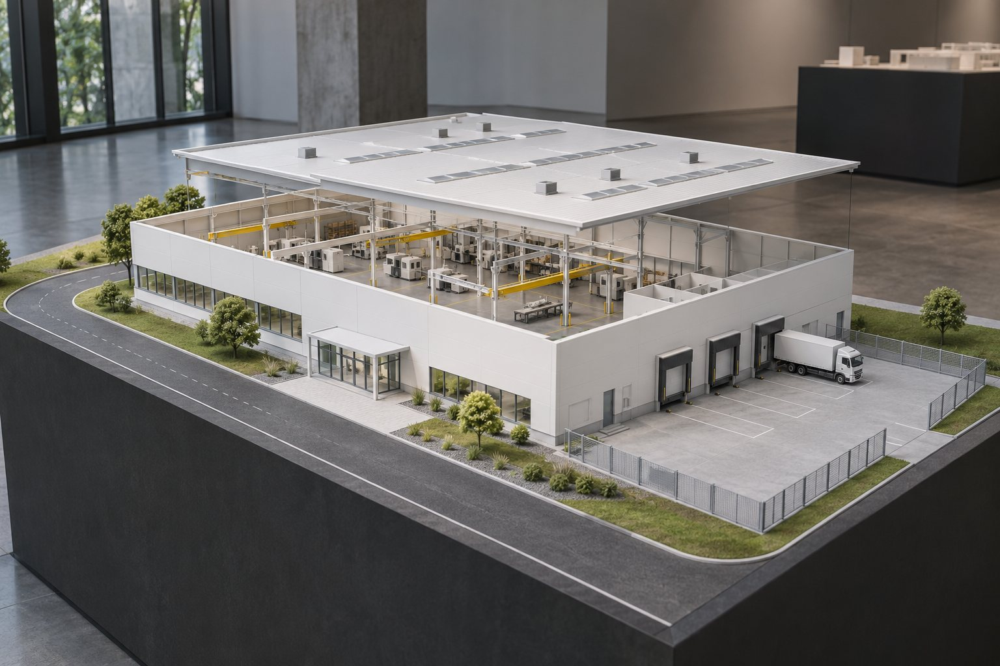
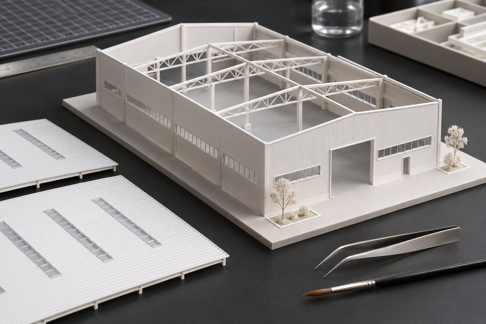
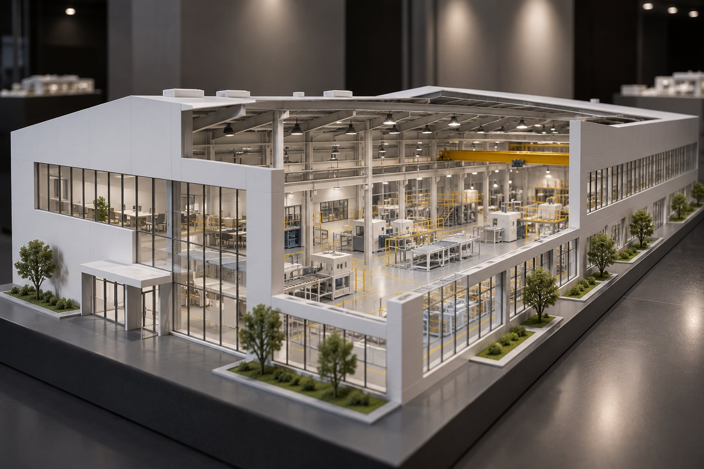

Промышленные выставки / кейс-концепт
Показать объект со всех сторон
Превратить проект цеха в предмет для разговора.

Задача
У условного участника выставки есть чертежи производственного корпуса. На стенде нужно быстро объяснить расположение зон и связи между ними. Плоская схема не даёт общего представления, поэтому предлагаем физический макет со съёмной частью кровли.
Что сделали

Задаём масштаб
Согласуем размер, уровень детализации и способ перевозки.
Готовим модель
Разбиваем геометрию на печатные и сборочные элементы.
Печатаем и собираем
Подгоняем детали, окрашиваем и монтируем на подставку.
Проверяем показ
Проверяем съёмные части и составляем порядок упаковки.
Объект, который можно рассмотреть

Съёмная кровля открывает внутреннее устройство.
Собранный окрашенный макет на подставке, согласованные съёмные элементы и инструкция по обращению. Упаковка и доставка входят только при отдельном согласовании.
Паспорт макета / пример
Демонстрационный фрагмент, не рабочая документация.
| Узел | Решение |
|---|---|
| Основной объём | Корпус на жёсткой подставке |
| Кровля | Съёмная секция для показа |
| Территория | Подъезд и зона разгрузки |
| Передача | Проверка сборки и упаковки |
Этапы и срок
2–4 недели
- Неделя 1 · масштаб и модель
- Недели 2–3 · печать и сборка
- Недели 3–4 · окраска и проверка
Ориентир по стоимости
85 000 ₽
Ориентир включает модель, печать, сборку, покраску и подставку. Размер, детализация, подсветка и логистика влияют на итоговую оценку.
Итоговый состав, срок и стоимость фиксируем после разбора исходных данных.